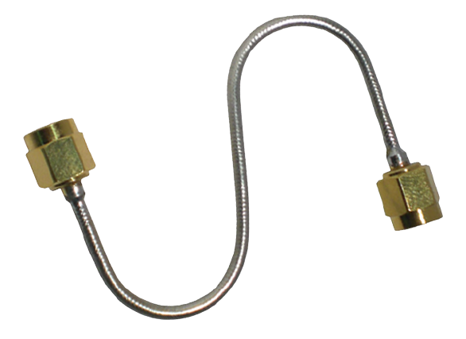

| Primary Cable Type | |||||
|---|---|---|---|---|---|
| Coaxial | Twisted Pair | Fiber Optics | |||
 |
 |
||||
Coaxial Cable
Coaxial cable is a type of copper cable specially built with a metal shield and other components engineered to block signal interference. It is primarily used by cable TV companies to connect their satellite antenna facilities to customer homes and businesses. It is also sometimes used by telephone companies to connect central offices to telephone poles near customers.
Coaxial cable was invented in 1880 by English engineer and mathematician Oliver Heaviside, who patented the invention and design that same year. AT&T established its first cross-continental coaxial transmission system in 1940.
Types of Coaxial Cable
Hard Line Coaxial Cable |
Hard line coaxial cable makes use of a center conductor that is constructed out of materials such as copper, silver, aluminum, or steel and this type of cable is typically larger in diameter than other forms of coaxial cable. |
|---|---|
| Flexible Coaxial Cable |
can move and flex as needed to suit the configuration and geometry of the application. A typical design for flexible coaxial cable utilizes a metal inner conductor surrounded by a flexible polymer that functions as the dielectric, with an outer jacket for protection from the environment. |
| Semi-rigid Coaxial Cable |
makes use of a solid copper outer sheath with a dielectric of PTFE. The copper sheath generally provides superior shielding effectiveness and the dielectric properties offer enhanced high frequency performance. |
| Formable Coaxial Cable  |
An alternative to semi-rigid coaxial cable is formable coaxial cable, also known as conformable coaxial cable. In place of a rigid copper outer sheath, a flexible metal sheath is used, which can be reshaped and formed by hand the meet the desired cable configuration requiring any specialized tools. |
Twin Axial Cable |
are reduced cable loss, greater protection from ground loops and capacitive fields, and a reduction in low-frequency magnetic noise. These cables are best suited for use in low-frequency digital and video applications. |
Coaxial cable is more resistant to interference and attenuation than twisted-pair cabling.attenuation is the loss of signal strength that begins to occur as the signal travels farther along a copper cable.
Twisted-Pair Cable
A twisted pair cable is a type of cable made by putting two separate insulated wires together in a twisted pattern and running them parallel to each other. This type of cable is widely used in different kinds of data and voice infrastructures.
Categories of UTP:
| Category 1 |
Most telephone cable prior to 1983 was Category 1 cable. |
|---|---|
| Category 2 |
Cable for data transmissions up to 4Â megabits per second (Mbps) |
| Category 3 |
Cable for data transmissions up to 16 Mbps. |
| Category 4 |
Cable for data transmissions up to 20 Mbps. |
| Category 5 |
Cable for data transmissions up to 100 Mbps. |
| Category 6 |
up to 1000 Mbps (200 MHz) |
Logical Topology reflects arrangement of devices and their communication. It is the transmission of data over physical topology. It is independent of physical topology, irrespective of arrangements of nodes. It defines the process of how the media is accessed by the hosts when sending data.